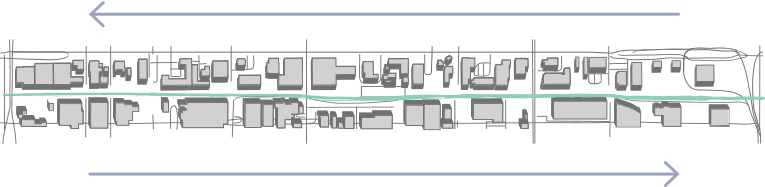
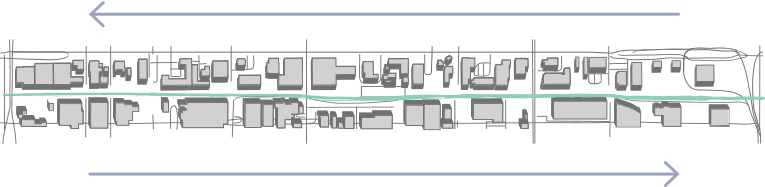

These are just a few of the bold, cutting-edge murals that greet you as part of a public art project called
the sodo track
4th Ave S.  6th Ave S.
image courtesy of sodotrack.com
The SODO Track has a lofty goal: to transform two miles of street corridors —32 buildings to be exact — into an art-in-motion experience
 View on Google Maps
View on Google Maps
the sodo track
4th Ave S.  6th Ave S.
image courtesy of sodotrack.com
The SODO Track has a lofty goal: to transform two miles of street corridors —32 buildings to be exact — into an art-in-motion experience
-
View on Google Maps
START